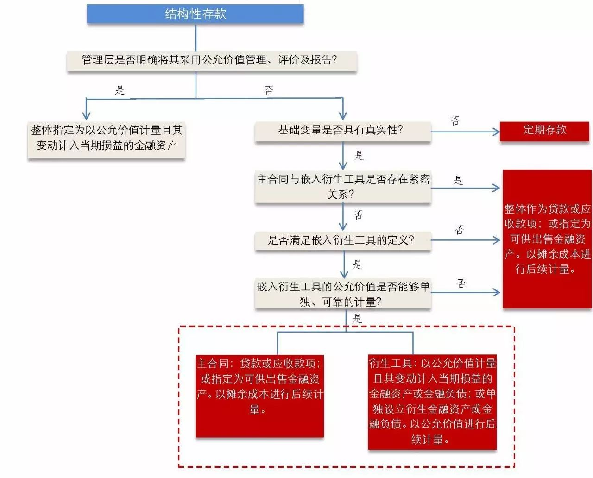

天职国际会计师事务所
结构性存款的会计处理
天职研究20160817
案例背景：
结构性存款，通常是指商业银行在吸收客户存款的基础上加入一定的衍生产品结构，通过与国际、国内金融市场各类指数挂钩，使投资者在承担一定风险的基础上获得较普通存款更高收益的产品。结构性存款挂钩标的种类较多，常见的挂钩标的包括境内外利率、汇率、股票、基金、商品价格指数等。
一、结构性存款的基本会计处理原则
对于结构性存款的会计处理，证监会在《2014年上市公司年报会计监管报告》中曾提及其一般会计处理原则：
“结构性存款的分类，主要取决于存款产品说明书中的约定条款。目前公司认购、银行发行的结构性存款，其收益可能是与某些基础变量挂钩，如利率、汇率、黄金价格等，此类产品应视为嵌入衍生工具。根据企业会计准则及相关规定，公司应当将结构性存款中嵌入的衍生工具分拆，单独进行会计处理，但若嵌入衍生工具与存款合同在经济特征及风险方面存在紧密联系（如利率风险），或者与嵌入衍生工具类似条款的工具不符合衍生工具的定义或无法单独计量，可以将结构性存款整体指定为以公允价值计量且其变动计入当期损益的金融资产。”
根据上述原则，结构性存款属于嵌入衍生工具，应按嵌入衍生工具的相关规定进行处理。根据《企业会计准则第22号——金融工具确认和计量》，嵌入衍生工具，是指嵌入到非衍生工具（即主合同）中，使混合工具的全部或部分现金流量随特定利率、金融工具价格、商品价格、汇率、价格指数、费率指数、信用等级、信用指数或其他类似变量的变动而变动的衍生工具。
若企业的风险管理或投资策略的正式书面文件已载明其结构性存款连同其他相关金融资产或金融负债组合，以公允价值为基础进行管理、评价并向关键管理人员报告，企业可以将该结构性存款整体指定为以公允价值计量且其变动计入当期损益的金融资产或金融负债。但是，如果（1）嵌入衍生工具对混合工具的现金流量没有重大改变；或者（2）类似混合工具所嵌入的衍生工具，明显不应当从相关混合工具中分拆，则企业不应将嵌入衍生工具整体指定为以公允价值计量且其变动计入当期损益的金融资产或金融负债。
嵌入衍生工具相关的混合工具没有指定为以公允价值计量且其变动计入当期损益的金融资产或金融负债时，根据《企业会计准则第22号》第二十二条规定，同时满足下列条件的，该嵌入衍生工具应当从混合工具中分拆，作为单独存在的衍生工具处理：
“（1）与主合同在经济特征及风险方面不存在紧密关系；
（2）与嵌入衍生工具条件相同，单独存在的工具符合衍生工具定义。
无法在取得时或后续的资产负债表日对其进行单独计量的，应当将混合工具整体指定为以公允价值计量且其变动计入当期损益的金融资产或金融负债。”
二、实务应用应关注问题
1.单独存在的工具是否符合衍生工具的定义
实务中，在判断嵌入衍生工具是否满足分拆条件时，需要关注嵌入工具如果与主合同分立，单独存在时，是否仍然满足衍生工具的定义。衍生工具，是指具有以下三个特征的金融工具：
“（1）其价值随特定利率、金融工具价格、商品价格、汇率、价格指数、费率指数、信用等级、信用指数或其他类似变量的变动而变动，变量为非金融变量的，该变量与合同的任一方不存在特定关系；
（2）不要求初始净投资，或与对市场情况变化有类似反应的其他类型合同相比，要求很少的初始净投资；
（3）在未来某一日期结算。”
其中，实务中容易混淆的是对特征（1）的判断。首先，应区分该工具的变量属于金融变量还是非金融变量。当属于非金融变量时，该变量不能与合同的任一方存在特定关系。例如，如果结构性存款计算利息的变量，是以存款方的某项财务指标（收入、净利润等）为基础的，则该结构性存款中嵌入的工具，不满足衍生工具的定义，不应对该结构性存款进行分拆。
2.基础变量是否具有真实性
值得注意的是，虽然上述准则及证监会规定了嵌入衍生工具的一般处理原则，但是，在实务中，还需要根据结构性存款所约定的基础变量变动是否具有真实性。当约定的基础变量极不可能发生时，表明该基础变量不具真实性，从而使形式上的衍生工具不具真实性。此时，根据合同经济实质，此类结构性存款实质上和一般定期存款没有区别，从而不需要再执行上述分拆分析，按一般定期存款的处理对此类结构性存款进行处理即可。
具体的，当结构性存款的实质是一般定期存款时，如果其短于一年，属于流动资产性质，并且银行对该项结构性存款提供相应的存款单/存款证明，证明该款项属于企业账户存款，则企业可以将该类结构性存款作为银行存款核算。如果银行无法提供相应的存款单证明该款项属于企业账户存款，且预计不会提前支取，则企业应将该结构性存款作为贷款和应收款项核算，并作为“其他流动资产”在报表中列报。如果期限超过一年，且预计一年内不会支取的，则应作为“其他非流动资产”列报。
|
案例情景
案例1 结构性存款——与黄金价格挂钩
A公司于2015年12月1日向B银行申购一项结构性存款，申购金额为2000万元。该结构性存款到期日为2016年11月30日，在存款存续期内，A公司与B银行均无权提前终止该存款。根据该结构性存款产品说明书，该结构性存款到期利息以上海黄金交易所发布的申购日和到期日黄金价格为基础计算，以到期日黄金价格与申购日价格相比，每盎司黄金价格上下浮动10元为价格波动区间（假定该波动区间是有可能发生的），则该结构性存款到期利率分别为：如果到期日黄金价格水平未突破价格波动区间，则存款到期利率为3.7%；如果到期日黄金价格水平突破价格波动区间，则存款到期利率为2.5%。假设银行同期存款利率为3%。A公司管理层未明确将结构性存款连同其他相关金融资产或金融负债组合，以公允价值为基础进行管理、评价并向关键管理人员报告。
问题：A公司应当如何对该结构性存款进行会计处理？
案例2 结构性存款——与利率指数挂钩
C公司于2016年1月1日向D银行申购一项结构性存款，申购金额为2000万元。该结构性存款到期日为2016年3月31日，在存款存续期内，C公司与D银行均无权提前终止该存款。根据该结构性存款产品说明书，该结构性存款到期利息以申购日和到期日上海银行间同业拆放利率为基础计算，以申购日和到期日上海银行间同业拆放利率3.5~5.5为价格波动区间（假定该波动区间是有可能发生的），则该结构性存款到期利率分别为：如果到期日上海银行间同业拆放利率未突破价格波动区间，则存款到期利率为3.5%；如果到期日上海银行间同业拆放利率突破价格波动区间，则存款到期利率为2.5%。假设银行同期存款利率为2.6%。C公司管理层未明确将结构性存款连同其他相关金融资产或金融负债组合，以公允价值为基础进行管理、评价并向关键管理人员报告。
问题：C公司应当如何对该结构性存款进行会计处理？
案例分析
案例1 结构性存款——与黄金价格挂钩
案例1中，A公司可以将该结构性存款整体指定为以公允价值计量且其变动计入当期损益的金融资产，后续期间，以该结构性存款的公允价值对该金融资产进行计量。
在A公司未选择将该结构性存款整体指定为以公允价值计量且其变动计入当期损益的金融资产时，由于存款说明书所约定的黄金价格波动区间是存在发生的可能性的，表明该基础变量具有真实性，所以，需要判断是否将结构性存款分拆处理。如果存款说明书所约定的黄金价格变动区间过大，乃至极不可能发生，则该结构性存款的基础变量并不具真实性，此时，根据合同，该结构性存款实质上就是一项以3.7%为利率的定期存款，直接按一般定期存款进行处理即可，不需要再往下进一步分析。
根据前述《企业会计准则第22号》第二十二条的规定，具体分析思路为：
（1）分析主合同与嵌入衍生工具是否存在紧密关系。该结构性存款的主合同是一项债务工具，该工具的主要风险是银行信用风险及利率风险。嵌入的衍生工具则是以黄金价格波动为基础的，其主要风险是黄金的商品价格风险。主合同与衍生工具的风险特征显著不同，因此，不存在紧密关系。
（2）判断结构性存款是否满足嵌入衍生工具的定义。该结构性存款中，利率随黄金价格的变动而变动，该变动利率不要求A公司的初始净投资，且在存款到期日进行结算，符合衍生工具的定义。
（3）判断嵌入衍生工具的公允价值是否能够单独、可靠的计量。该结构性存款所依据的上海黄金交易所黄金报价，属于可直接观察到的商品公允价值。以该商品价格为基础，A公司可根据合同约定条款，估计该衍生工具的公允价值。因此，该结构性存款嵌入衍生工具的公允价值能够单独、可靠的计量。
根据上述分析，A公司申购的结构性存款满足《企业会计准则第22号》第二十二条的分拆条件，应将主合同和嵌入衍生工具进行分拆处理。其中，分拆后的主合同在金融资产分类中应属于贷款或应收账款，或者指定为可供出售金融资产（债务工具），后续期间，以银行同期利率3%计算利息。嵌入衍生工具则计入以公允价值计量且其变动计入当期损益的金融资产或金融负债核算，或单独设立衍生金融资产或金融负债核算，后续期间，以上海黄金交易所发布的黄金价格及合同约定利率，估计该衍生工具的公允价值。
案例2 结构性存款——与利率指数挂钩
案例2中，C公司可以将该结构性存款整体指定为以公允价值计量且其变动计入当期损益的金融资产，后续期间，以该结构性存款的公允价值对该金融资产进行计量。
在C公司未选择将该结构性存款整体指定为以公允价值计量且其变动计入当期损益的金融资产时，由于存款说明书所约定的上海银行间同业拆放利率波动区间是存在发生的可能性的，表明该基础变量具有真实性，所以，需要判断是否将结构性存款分拆处理。如果存款说明书所约定的上海银行间同业拆放利率波动区间过大，乃至极不可能发生，则该结构性存款的基础变量并不具真实性，此时，根据合同，该结构性存款实质上就是一项以3.5%为利率的定期存款，直接按一般定期存款进行处理即可，不需要再往下进一步分析。
根据前述《企业会计准则第22号》第二十二条的规定，具体分析思路为：
（1）分析主合同与嵌入衍生工具是否存在紧密关系。该结构性存款的主合同是一项债务工具，该工具的主要风险是银行信用风险及利率风险。嵌入的衍生工具则是以上海银行间同业拆放利率为基础的，其主要风险也是银行利率风险。主合同与衍生工具的风险特征具有相关性，因此，存在紧密关系。
（2）判断结构性存款是否满足嵌入衍生工具的定义。该结构性存款中，利率随上海银行间同业拆放利率的变动而变动，该变动利率不要求C公司的初始净投资，且在存款到期日进行结算，符合衍生工具的定义。
综上说述，本案例中结构性存款的主合同与嵌入衍生工具存在紧密关系，不应进行分拆。此时，该结构性存款可以整体分类为贷款和应收款项，或指定为可供出售金融资产（债务工具），以摊余成本法后续计量。
|
案例小结
根据上述分析，一般结构性存款的会计处理分析思路如下图所示：
